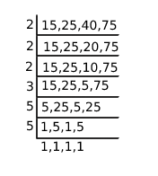
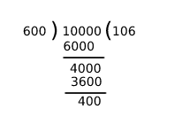

The least number having 5 digits which is divisible by 15,25,40 and 75 is?
Let us find the LCM of given numbers

LCM = 2 3 × 3 × 52
= 8×3×25
=600.
Given least 5 digit numbers = 10000
Divide 10,000 with LCM

remainder = 400
When 10,000 divided by 600 gives remainder 400, means number is exceeded from exact divisible number
i.e. 10,000 − 400 = 9600
But we want 5 digit no, so add 600 to 9600
9600+600 = 10200.